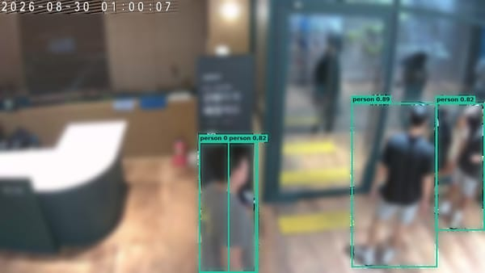
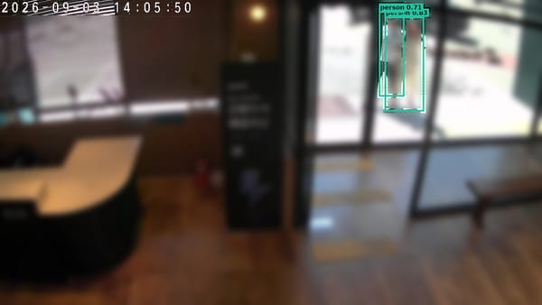
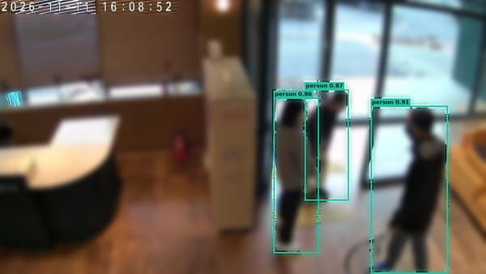
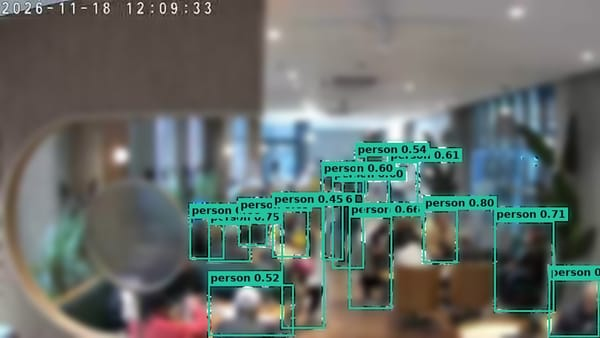
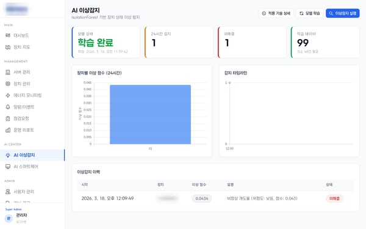
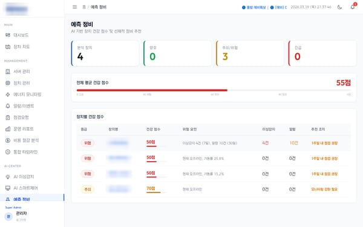
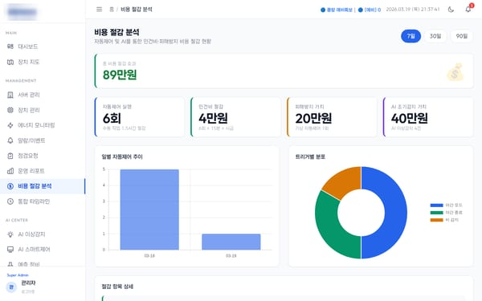
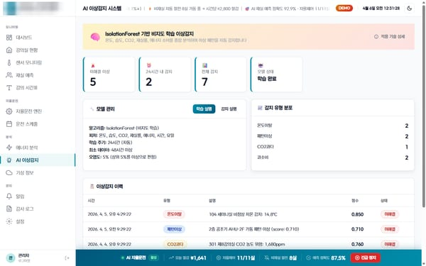
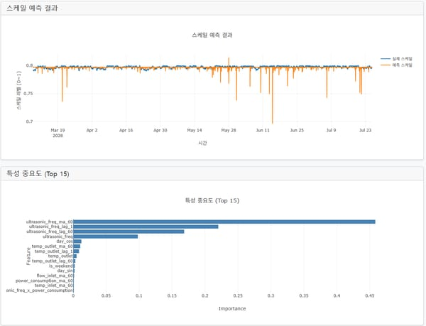

AI 솔루션
AI가 변화시키는 IoT의 미래 — 머신러닝과 빅데이터 분석으로 더 스마트한 자동화를 구현합니다.
실내 스포츠 시설 AI 카메라 감지
실제 운영 중인 시설의 카메라 2대로 사람과 소지품을 감지한 결과입니다. 사진은 실서버에서 촬영된 원본에 감지 결과를 표시한 것이며, 개인정보 보호를 위해 감지 상자 밖은 흐리게 처리했습니다. 모든 수치는 2026년 11월 19일 기준 집계입니다.
-

로비 — 4명 감지심야 시간 출입문 주변 -

로비 — 2명 감지유리문 밖에서 들어오는 방문객까지 인식 -

로비 — 3명 감지오후 시간 출입구 안쪽 -

라운지 — 14명 동시 감지점심 시간 대기실, 먼 자리까지 인식


1분마다 장면 분석 — 두 카메라의 스냅샷을 1분마다 보관하고, 라운지 카메라는 서버의 영상인식 모델(YOLOv8)로 사람·가방 수를 구역별로 세어 관제 화면에 표시합니다. 화면 전체와 좌우 절반을 따로 분석해 멀리 앉은 사람까지 찾아냅니다.
새 방문 자동 기록 — 카메라 자체의 사람 감지 신호를 실시간으로 받아, 3분 이상 비어 있던 공간에 사람이 나타나면 '새 방문'으로 기록하고 그 순간 고해상도 사진을 자동으로 촬영해 보관합니다.
- 분석한 장면
- 118,450프레임
- 최대 동시 감지
- 14명
- 새 방문 감지
- 1,273회
- 운영 기간
- 83일
- 2026.8.29 ~ 11.19 기준
AI 챗봇 고객 지원
24시간 자동 응대 시스템으로 고객 문의에 즉시 대응합니다. 자연어 처리 기술로 맥락을 이해하고 정확한 답변을 제공합니다.
예측 유지보수
센서 데이터를 실시간으로 분석하여 설비 고장을 사전에 예측합니다. AI 알고리즘이 최적의 유지보수 시기를 제안합니다.
- 95%고장 예측 정확도
- 30%유지비용 절감
- 24/7실시간 모니터링
- ∞학습 개선
- 85%다운타임 감소
- <2h평균 대응시간
지능형 에너지 관리
사용 패턴을 학습하여 에너지 소비를 최적화합니다. 자동으로 피크 시간대를 예측하고 스마트 제어를 수행합니다.
- 실시간 에너지 사용량 모니터링
- AI 기반 사용 패턴 분석
- 자동 피크 시간대 회피
- 월 단위 에너지 절감 리포트
- 스마트 조명 자동 제어
- 냉난방 시스템 최적화
- 대기전력 자동 차단
비즈니스 인사이트
방대한 IoT 데이터를 분석하여 비즈니스 의사결정을 지원합니다. 트렌드를 파악하고 성장 기회를 발견합니다.
실제 적용 사례
위 기능을 실제 고객 현장과 연구 과제에 적용한 운영 화면입니다. 고객사 로고와 식별 정보는 가렸고, 일부 화면은 시연·시험 데이터로 표시했습니다. 이미지를 누르면 크게 볼 수 있습니다.
-

AI 이상탐지장치 상태를 비지도 학습해 평소와 다른 동작을 자동 감지 -

AI 예측 정비장치별 건강 점수를 매기고 점검 시기를 미리 권고 -

비용 절감 분석자동제어와 AI 조기감지 효과를 금액으로 환산 -

대학 건물 AI 이상감지 (시연 데이터)온도·습도·CO2·재실률·에너지를 종합해 이상 패턴 감지 -

설비 스케일 예측 R&D (시험 데이터)센서 데이터로 설비 내부 스케일 생성 수준을 예측


-
매장·설비 통합 관리
운영 플랫폼에 AI 기능 탑재
무인매장·옥외 설비를 관리하는 플랫폼에 AI 이상탐지, 예측 정비, 비용 절감 분석, 태양광·배터리 에너지 예측, AI 방문자 분석을 넣어 운영자가 한 화면에서 판단하도록 했습니다.
-
대학 건물 테스트베드
강의실 에너지 자율운전
강의실 센서와 시간표를 학습해 재실을 예측하고, 비어 있는 강의실은 자동으로 절전합니다. 비지도 이상감지로 공조 설비의 이상 패턴도 찾아냅니다.
-
산학 R&D
설비 스케일 예측과 주파수 추천
초음파 장치의 센서 데이터로 설비 내부 스케일 생성 수준을 예측하고, 장치가 쓸 적절한 주파수 대역을 추천해 최적값을 찾는 시간을 줄입니다.